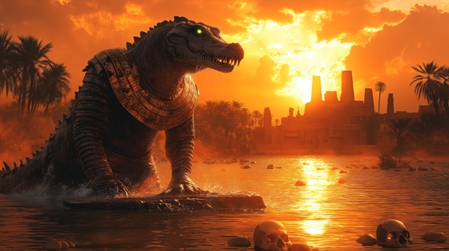

Sink into the feral waters of “Crocodile Throne”, a brutal metal tribute to the god Sobek — the untamed force of the Nile, protector of Egypt, and devourer of kings. This is the heartbeat of the river and the teeth of divine power.
Who is Sobek?
Sobek is the crocodile-headed god of the Nile River, fertility, military prowess, and fierce protection. A paradoxical deity, Sobek is both provider and destroyer — the god who blesses with abundance and punishes with primal force.
Worshiped especially in Faiyum and Kom Ombo, he represents raw, untamed nature and divine predation, protecting pharaohs in battle while symbolizing the fertility of floodwaters.
Sobek: Crocodile Throne
I rise from Nile in fang and scale
Where blood runs deep and legends sail
The crocodile, the jaws of kings
I rule the tide and all it brings
My breath is flood, my limbs are war
I tear through bone with ancient law
No throne was made that I can't drown
I wear the water as my crown
The river speaks in roars and death
My rule is carved in roaring breath
I am Sobek — the primal tide
The god of strength, the teeth that guide
From delta swamps to temple flame
They fear my voice, they speak my name
Crocodile throne, devourer born
I rise where waters churn and warn
In battles waged by sword and spear
I fight beside the ones who fear
The soldiers wear my sacred mark
And call me forth when days go dark
I drink the blood that feeds the Nile
I walk in silence, stalk in guile
They sing of peace, but peace is prey
And I will hunt until they pay
The river speaks in roars and death
My rule is carved in roaring breath
I am Sobek — the primal tide
The god of strength, the teeth that guide
From delta swamps to temple flame
They fear my voice, they speak my name
Crocodile throne, devourer born
I rise where waters churn and warn
I give the fields their fertile flood
And take them back with crimson mud
A father, beast, a god, a tide
With coils that crush and eyes that bide
The pharaoh bows, the scribe obeys
For none escape my hunting gaze
The Nile is mine, its pulse, its moan
And from its depths, I claim my throne
The river speaks in roars and death
My rule is carved in roaring breath
I am Sobek — the primal tide
The god of strength, the teeth that guide
From delta swamps to temple flame
They fear my voice, they speak my name
Crocodile throne, devourer born
I rise where waters churn and warn
In sacred scales and sacred jaws
I hold the world beneath my claws
A beast of gods, a god of beasts
I rise when kingdoms fail and feast
So praise the flood, the fang, the stone
I am Sobek — the Nile, the throne
In water's roar, my rule is sown
A god of blood, a god alone